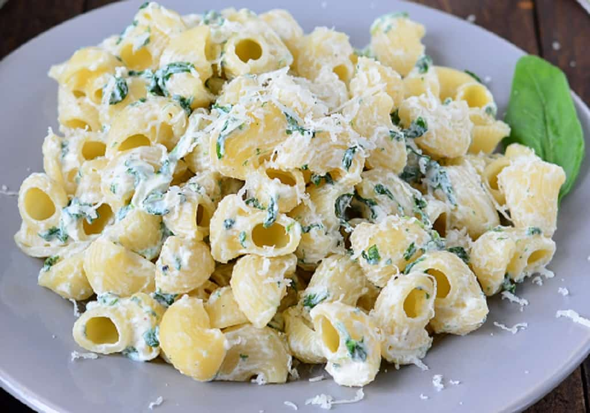
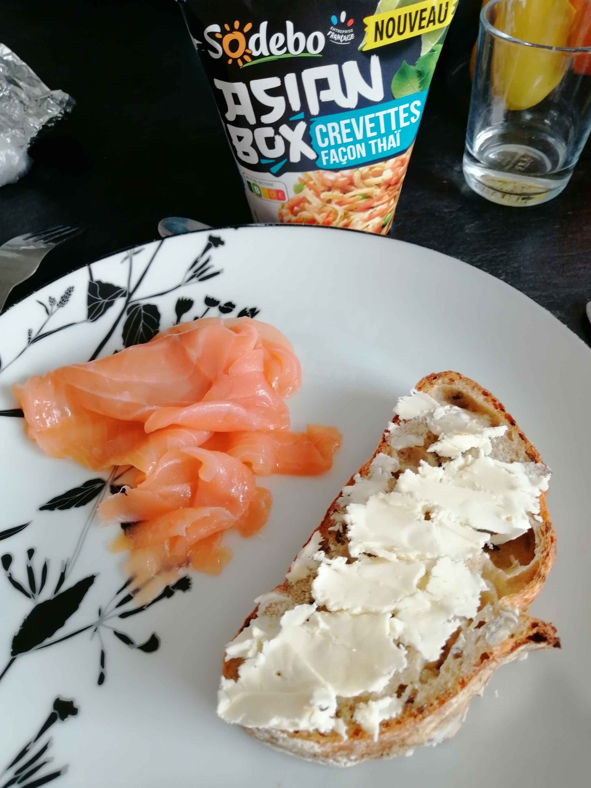
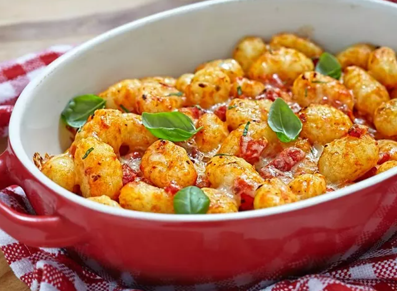

Léo : Pâtes au bleu 150g de pâtes du bleu de la crême liquide une assiette  (photo non contractuelle)
Rémi  Entrée : Pain complet, beurre saumon, jus de citron Plat : Asianbox Crevettes façon thaï Dessert : MaronSui's
Virginie  Entrée : tarte au thon avec une petite salade verte Plat : gnocchis tomate et basilic Dessert : clémentines